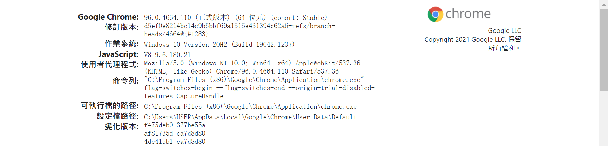
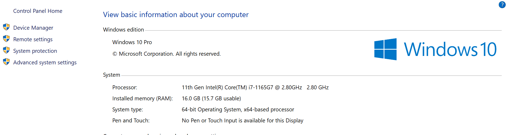
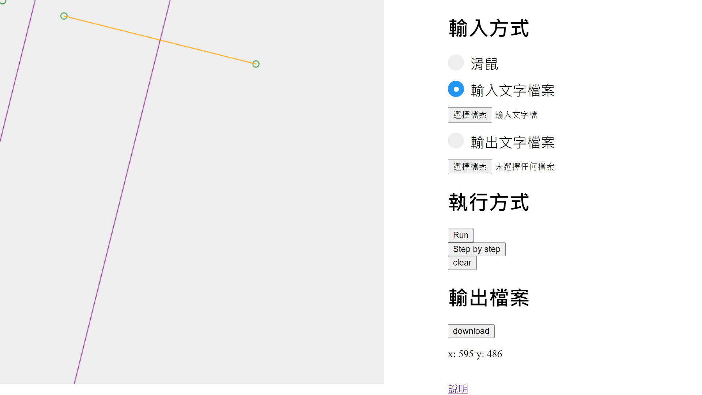
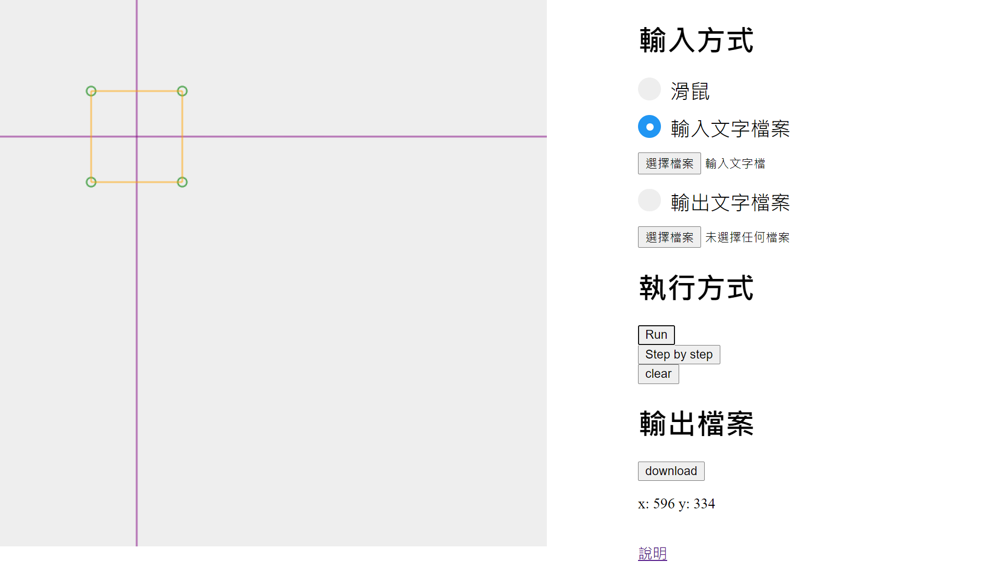
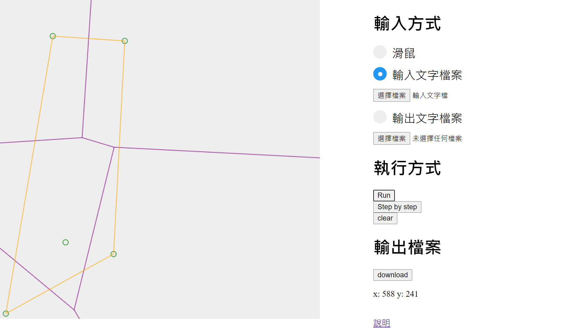
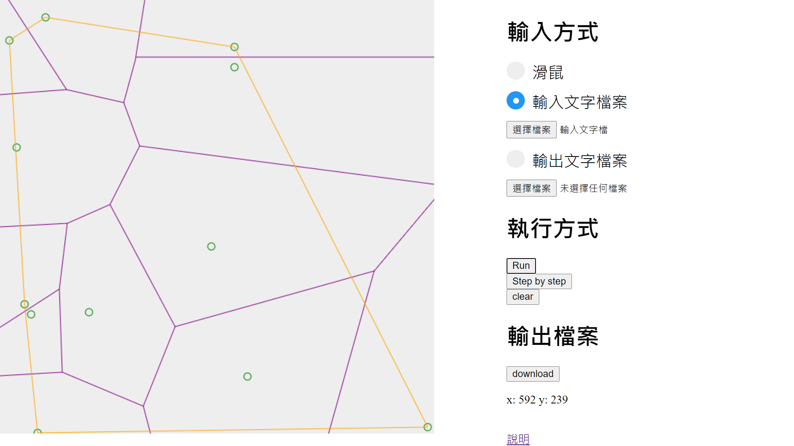
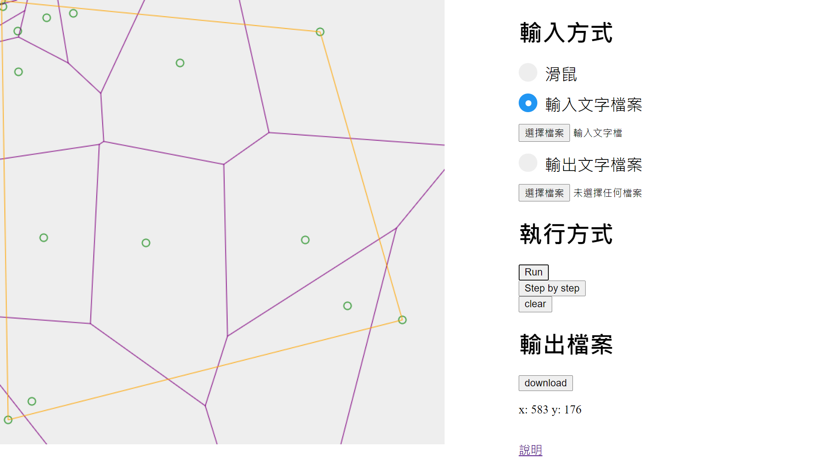
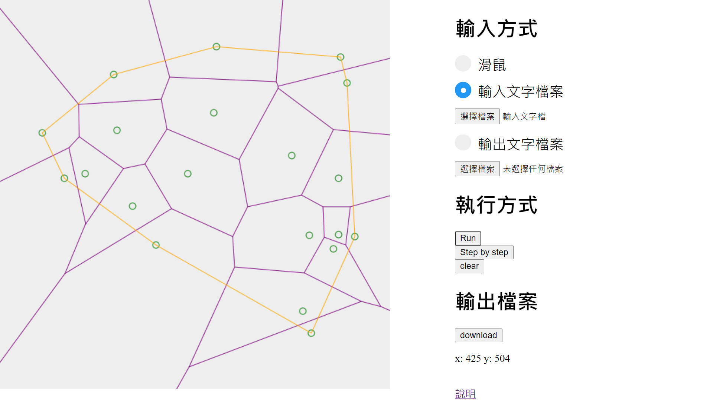
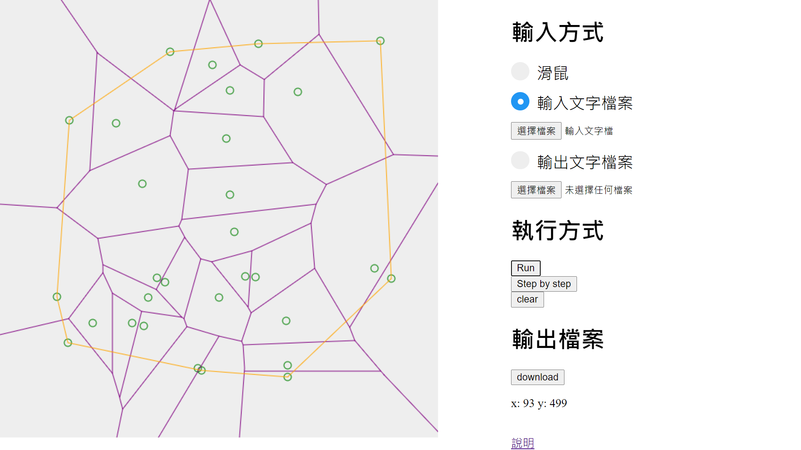

題目、系級、姓名、學號
Voronoi diagram 演算法
資工碩一
何承翰
M103040056
軟體規格
輸入
1. 在畫布上任意點擊
2. 讀取「輸入文字檔」
3. 讀取「輸出文字檔」
輸出
按下 download，產生「輸出文字檔」
介面
 功能
功能
Browse...：開啟檔案
Run：執行到最後
Step：Step By Step 執行
clear：清除畫布
download：下載輸出檔案
軟體測試規劃
1. 共線: 3點共線、4點矩形
2. 多點測試: 5、12、15、20、30、50點
軟體說明
開啟方式
使用 Google Chrome 開啟
index.html
輸入方式
1. 輸入分成3種，要先選對應的輸入選項按鈕才能輸出
2. 如果要產生目前畫布上頂點的Voronoi，要先換成
滑鼠選項
執行方式
Run 直接建立 Voronoi
Step by step 一步一步執行
clear 清空所有點
輸出檔案
download 下載<輸出文字檔案>至瀏覽器預設下載資料夾
程式設計
資料結構
Point 儲存 x, y 值
Edge 儲存起點和終點
建立 Voronoi Diagram
step.1 排序輸入的點
step.2 recursive 到輸入點數量 <= 2，直接產生 Voronoi Diagram
step.3 merge 左右兩邊 Voronoi Diagram，直到完成
Convex Hull
在建立點數量 <= 2的 Voronoi Diagram 時，就記著當前 convex hull
所以只需要計算上下兩條切線，然後捨棄左右兩邊非 convex hull 的點
Hyperplane
step.1 建立 convex hull 較高之切線的中垂線 PB
step.2 找左右兩 Voronoi 中最早碰到 PB 的邊，換新的 PB
step.3 重複 step.2 直到抵達 convex hull 較低之切線
軟體測試與實驗結果
測試環境
Language JavaScript
Browser Google Chrome 96.0.4664.110
JavaScript engine V8 9.6.180.21

OS Windows 10 Pro 20H2
CPU i7-1165G7
Memory 16GB

實驗結果
3點

4點

5點

12點

15點

20點

30點

結論與心得
做完這個Term Project， 不只學到了使用 Divde-and-conquer 實作 Voronoi Diagram 的方法， 而且也更熟悉了 JavaScript 繪圖、事件監聽以及檔案處理的功能， 雖然 Divde-and-conquer 並不是最有效率的解法， 但比起完全暴力硬解，Divde-and-conquer 還是好很多， 因為 Voronoi 只會和鄰近的點建立中垂線， 一開始先分割成多組資料，就可以省掉很多不必要的比較。 最後，這次作業還能改進的地方是： 因為沒有記錄足夠資訊，每次找
hyperplane 時，左右某一邊的所有點都需要看過一遍，因此執行效率不佳， 如果能改用講義的資料結構撰寫，那麼時間複雜度會變得很漂亮～
附錄